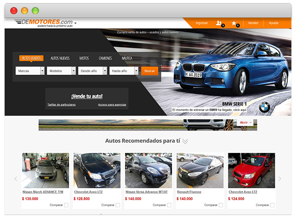

Hi. My name is Melina and I design web experiences.
About meprofile
Melina Szarfsztejn,
Buenos Aires, Argentina
32 years old
Technical Lead & Project Manager for both Web Design & Front-end Development, with fifteen years of hands-on experience and a background in Fine Arts, Graphic Design, Photography and Cinematography.
My specialties are Web Products Scoping, User Interface Design and User Experience Analysis for online applications, Front-End performance Analysis, Responsive Web Design and Accessible/Semantic HTML5+CSS.
Certified as Scrum Master in November 2011, I've also attended several Open Spaces organized by Agiles (the LatAm agile professional community).
More recently I completed the Executive Program on User Experience Design at ITBA in August 2014. After attending the 2013 UX Day in Buenos Aires I started to participate in the local chapters of the professional associations UXPA and IxDA.
In Novermber I also attended the brilliant Interaction South America 2014 conference which was held in Buenos Aires for the first time this year.
Passionate about keeping up with the latest trends in design and new technologies, I'm constantly researching everything HTML5, mobile first RWD and iOS/Android design patterns.
work
DeMotores.com Responsive Relaunch
An Awareness Survey in 2013 enlightened us in that the Top of Mind among users which had visited DeMotores was the lowest in the category, with a 14%.
Based on this insight and the fact that the site had a look&feel that hadn't been updated since 2009, we started a journey of redesigning the entire site with the short term milestones of Listing - Item - Home; the latter also including a general layout redesign.
In my position as Design & Front-End development Coordinator I was in charge of providing the vision for the complete redesign of the marketplace, which was relaunched on January 15th, 2014.
Along with the redesign, I pitched a Responsive approach to take the critical workflow of the marketplace to a solid mobile experience and at the same time enhance its FE performance, through a CSS rewrite and the creation of what we called an "asset server" (a grails-built service which returns concatenated and minified assets) which allowed us to serve different assets for different screen widths.
My project was approved and I lead it to a successful release on June 4th, 2014.
DeMotores.com iOS and Android Native Apps
We considered necessary to reinforce the consistent application of the brand book on all channels, in order to ensure uniform and standardized design to help improve DeMotores' brand recall.
When I started with the company, DeMotores’ apps were both functionally and visually modeled after iOS 4. With the imminent release of iOS7, I redesigned every user interface of both apps considering the particularities of each operative system and our own brandbook, in order to achieve the most intuitive interactions for each type of user.
Significant Achievements
- + 30% conversion rate
- Improvement in engagement: screen views per session = + 70% (14 vs 8)
- We doubled the use of the Watch list and social sharing features.
Web Applications
{kind=link}
Funnely is an online assistant that will help online stores' owners create, manage and optimize their marketing campaigns.
I collaborated with the redesign and font-end code refactoring of its critical workflows (account setup, campaign setup) with a mobile-first, responsive approach.
{kind=link}
{kind=link}
Solving eCommerce disputes has never been this swift, easy and cost-effective!
I collaborated as Art Director for Pactanda's web application visual strategy.
Retailer Websites
{kind=link}
Foglia is one of Dafiti's private brands, oriented to independent women in their 30s - 40s.
While serving as Frontend Developer & UX analyst, I made an institutional website for each of their private brands in order to add to the identity of the brands outside of what the users would find in the online store.
{kind=link}
{kind=link}
{kind=link}
{kind=link}
{kind=link}
{kind=link}
{kind=link}
{kind=link}
Professional/Personal Websites
{kind=link}
Rodrigo Suarez Arquitectura is the institutional website for a small architecture firm.
I designed and coded this one page site in December 2014.
{kind=link}
{kind=link}
Magdalena Yomha is the personal website of a playwright who needed a way to show her resume and her plays' synopses.
It's another one page site which I designed and coded in October 2014.